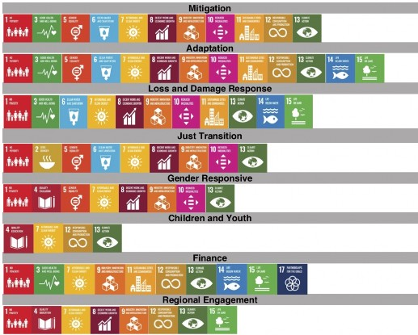
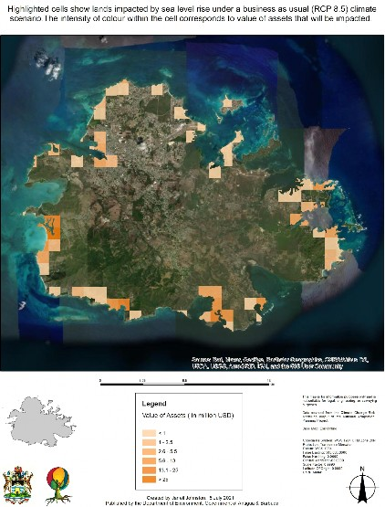

UPDATED NATIONALLY DETERMINED CONTRIBUTION
For the period 2020 – 2030
Communicated to the UNFCCC on 2nd September 2021
This NDC submission has been produced by the Government of Antigua and Barbuda’s, Department of Environment Ministry of Health, Wellness and the Environment with the support of the Cabinet and other government entities, NGOs, community groups, and the private sector. (Image courtesy of the Department of Environment)
|
ACE |
Action for Climate Empowerment |
|
AF |
Adaptation Fund |
|
AFOLU |
Agriculture, Forestry and Other Land Use |
|
APUA |
Antigua Public Utilities Authority |
|
CAEP |
Climate Action Enhancement Package initiative |
|
CARICOM |
Caribbean Community |
|
CBIT |
Capacity Building Initiative for Transparency |
|
CCMRV |
Caribbean Cooperation Monitoring Reporting and Verification Hub |
|
CRDF |
Climate Resilience and Development Fund |
|
DOE |
Department of Environment |
|
EbA |
Ecosystem-based adaptation |
|
EDP |
Entrepreneurs Development Fund |
|
EE |
Energy Efficiency |
|
ECCB |
Eastern Caribbean Central Bank |
|
ECSE |
Eastern Caribbean Securities Exchange |
|
EIMAS |
Environmental Information Management and Advisory Systems |
|
EPMA |
Environmental Protection Management Plan |
|
EDA |
Enhanced Direct Access |
|
EV |
Electric vehicles |
|
GARD |
Gilbert Agricultural and Rural Development Centre |
|
GCF |
Green Climate Fund |
|
GDP |
Gross Domestic Product |
|
GEF |
Global Environmental Facility |
|
GESI |
Gender Equality and Social Inclusion |
|
GGA |
Global Goal on Adaptation |
|
GGGI |
Global Green Growth Institute |
|
GHG |
Greenhouse gas emissions |
|
GIS |
Geographic Information Systems |
|
GOAB |
Government of Antigua and Barbuda |
|
IAS |
Invasive Alien Species |
|
ICE |
Internal combustion engine |
|
ILO |
International Labour Organisation |
|
INDC |
Intended Nationally Determined Contributions |
|
IPCC |
Intergovernmental Panel on Climate Change |
|
IRENA |
International Renewable Energy Agency |
|
LAP |
Local Area Planning |
|
MEAs |
Multilateral Environmental Agreements |
|
Micro-IPPs |
Micro-independent power producers |
|
MTDS |
Medium-Term Development Strategy |
|
M/SME |
Micro and Small to Medium Sized Enterprise |
|
MOF |
Ministry of Finance |
|
MRV |
Monitoring Verification and Reporting |
|
NAP |
National Adaptation Plan |
|
NEIS |
National Environmental Data Information System |
|
NDC |
Nationally Determined Contribution |
|
NDCP |
Nationally Determined Contributions Partnership |
|
NGOs |
Nongovernmental Organisations |
|
OECS |
Organisation of Eastern Caribbean States |
|
PV |
Photovoltaic |
|
RE |
Renewable Energy |
|
SDGs |
Sustainable Development Goals |
|
SIDS |
Small Island Developing States |
|
SIRF |
Sustainable Island Resource Framework Fund |
|
SIRMZP |
Sustainable Island Resource Management and Zoning Plan |
|
SLIM |
Antigua and Barbuda Sustainable Low-emission Island Mobility |
|
SLM |
Sustainable land management |
|
TAC |
Technical Advisory Committee |
|
TAPs |
Technology Action Plans |
|
TNA |
Technology Needs Assessments |
|
UNDP |
United Nations Development Programme |
|
UNEP-DTU |
United Nations Environment Programme DTU Partnership |
|
UNFCCC |
United Nations Framework Convention on Climate Change |
|
UNICEF |
United Nations International Children's Emergency Fund |
|
UWI |
University of West Indies |
|
WTE |
Waste to energy |
|
WIOC |
West Indies Oil Company |
The development of Antigua and Barbuda’s 2021 Nationally Determined Contribution (NDC) was led by the Department of Environment (DOE) based within the Ministry of Health, Wellness and the Environment and in consultation with the Ministry of Finance and over 15 other government entities. The DOE as well as the respective government entities consulted with NGOs, community groups and the private sector.
The Government of Antigua and Barbuda (GoAB) would like to gratefully acknowledge the generous support received from the NDC Partnership through its Climate Action Enhancement Package (CAEP) initiative to update Antigua and Barbuda’s NDC. Special thanks to our implementing partners Climate Analytics, the Global Green Growth Institute, International Renewable Energy Agency (IRENA), United Nations Framework Convention on Climate Change (UNFCCC) Regional Collaboration Centre, the Caribbean Cooperative MRV Hub, OECS Commission, United Nations Development Programme (UNDP), UNECLAC (United National Economic Commission) Trinidad Office, and United Nations International Children's Emergency Fund (UNICEF) for the technical assistance provided in the production of key studies, technical papers, policy papers, as well as support given in the conduct of consultations. The NDC also benefited from the reviews and comments of these implementing partners as well as local and international experts.
Special thanks to The Honourable Molwyn Joseph, Minister for Health, Wellness and the Environment, for his unwavering commitment to advance this ambitious climate change agenda, while Antigua and Barbuda faced an outbreak of the COVID-19 pandemic.
Significant contributions to the process were made by a wide-cross section of stakeholders from the public and private sector, civil society, trade and industry groups and training institutions, who attended NDC-related workshops, consultations and participated in key stakeholder interviews organized to inform the NDC update.
Thanks to the DOE's Project Management Unit and the commitment of its interns and apprentices, who worked tirelessly to collect much needed baseline data and to find alternative ways of engaging with stakeholders during the COVID-19 pandemic.
Prime Minister & Minister of Finance, Corporate Governance & Public Private Partnerships
As a Party to the Paris Agreement, Antigua and Barbuda has committed itself to pursuing the global goal of holding global average temperature to well below 2°C and focusing efforts to limit the rise to 1.5°C. To address this challenge, our country is taking bold steps to update and implement its Nationally Determined Contribution (NDC). Our main actions are focused within the transition away from imported energy to grow a new nationally sourced energy sector based on hybrid systems of wind, solar, batteries, LNG, LPG and eventually hydrogen. The aim is to build physical and financial resilience across our entire economy through economic growth in the energy sector.
To accelerate the energy transition, our country will grow a new energy sector that puts focus on local generation of energy using an abundance of wind and solar to replace 86% of fossil fuel imports by 2030. The transition to a new energy sector is a long-term process that requires changes on many levels and will be accompanied with adequate policies to ensure sustainable and socially inclusive growth for all citizens, particularly women.
We remain committed to increasing our ambition to cut emissions, scale up renewable energy, support a socially inclusive energy transition and a just transition of our workforce. We are advancing efforts to build a national climate resilient insurance scheme to increase protection of home and business owners, farmers, and fishers.
Our country is confronted with more frequent and intense tropical storms and hurricanes and is prone to droughts, intense floods, rising air temperatures, decreased annual rainfall and sea level rise. Its economic vulnerability has increased following every extreme weather event— such as Hurricane Irma in 2017 that was nothing short of devasting and hit us at our core. An estimated 80.4% of our country’s gross domestic product (GDP) is at risk due to economic and natural disaster shocks.
Under pressure to recover, we have had to divert critical financing away from meeting development challenges to climate change loss and damage response programmes. The harmful effects of climate change are indeed growing, and inaction will cost human lives and livelihoods.
In our NDC, Antigua and Barbuda was careful to include into our targets regional hopes and plans in an effort to recognize that we want to work with our OECS colleagues to face the threat of climate change together.
The implementation of our NDC will be designed to support the creation of new jobs, stimulate new investments in renewable energy and the development of green business opportunities. For the transition to be successful, no one must be left behind, especially disadvantaged, and vulnerable groups. While my government recognizes the importance to transition to a low-carbon economy, such a shift should not be at the detriment of our people, their wellbeing, their livelihoods, and their way of life.
Minister of Health, Wellness & The Environment
Antigua and Barbuda like other small island developing states (SIDS) are forced to endure the impacts of a climate crisis, not of our own making. Given this climate challenge, as part of our Nationally Determined Contribution (NDC), we are preparing to develop a robust national energy system powered by natural energy resources such as solar and wind. Delaying transformation of our energy system and other climate actions will only serve to worsen Antigua and Barbuda’s vulnerability and exposure to climate-related risks.
Pursuing an energy transition, undoubtedly presents a myriad of opportunities as well as challenges for the most vulnerable in society, particularly, as it relates to accessing and affording energy. Currently, our communities, households and businesses are hard hit by rising energy costs.
We also acknowledge that vulnerable groups are an integral part of the low-carbon transition. To ensure participation, they will be introduced to social inclusion and investment opportunities that promote the economic benefits of renewable energy and energy efficiency options. The challenges faced by these groups are varied and tend to be exacerbated by climate change and its negative impacts.
A key priority is removing barriers that inhibit female-headed households and micro, small and medium enterprises (MSMEs) from accessing back-up renewable energy generation and storage systems to support their post-extreme weather event recovery. To allow households in vulnerable communities to better cope with the financial impacts of climate change, they will be introduced to micro-financing programmes to facilitate their access to affordable renewable energy products and services.
A just transition of the workforce by 2030 remains at the heart of our transition policies. The Government of Antigua and Barbuda (GoAB), led by the Honourable Gaston Browne, envisions the creation of new skillsets and enhancement of capabilities to strengthen this effort. Our ambitious plans to increase renewable energy generation will require us to expand workers’ renewable energy capacity within the next decade.
Apprenticeship programmes targeting individuals from diverse socio-economic backgrounds will help prepare a new workforce for a net-zero future. New entrants to the labour market and current workers will be trained and re-trained to operate and maintain renewable energy technologies; and adopt new standards and practices.
To cope with such transformational shifts, businesses will need to adapt their models and ready their operations for change. Our climate action plans are focused on building the entrepreneurial capacity of women, youth, and MSMEs. We will work to stimulate growth in green businesses that implement renewable energy and adaptation interventions.
In collaboration with key government entities, civil society, and the private sector along with supporting legislative frameworks and much needed climate finance a lot of this work and the change that we seek can be realized.
UPDATED NATIONALLY DETERMINED CONTRIBUTION (NDC)
for the period of 2020 - 2030 Communicated to the UNFCCC on 2nd September 2021
This submission communicates Antigua and Barbuda’s updated Nationally Determined Contribution to the global response to climate change (NDC) in line with the United Nations Framework Convention on Climate Change 1992 and its Paris Agreement 2015.
Antigua and Barbuda, as a Party to United Nations Framework Convention on Climate Change 1992 (UNFCCC) and its Paris Agreement 2015, submitted its first Intended Nationally Determined Contributions (INDC)1 in October 2015. The INDC subsequently became a Nationally Determined Contribution (NDC), and Antigua and Barbuda ratified the Paris Agreement on Climate Change in December 2016. Pursuant to Article 4 of the Paris Agreement, and in an effort towards contributing to limiting the global average temperature increase to 1.5°C above pre-industrial levels, Antigua and Barbuda hereby submits its updated NDC. This NDC will cover the period 2020 to 2030 and it includes targets for mitigation and adaptation as well as targets that are designed to:
Reduce transitional risks,
Support vulnerable groups, including women, the elderly and people living with disabilities
Support an inclusive, gender responsive approach to the energy transition with special focus on women fully participating in the new economy and providing support for men working within the power and transportation sectors as the transition advances,
Support youth fully with a gender responsive approach for girls and boys of all income levels in meeting the new challenges and opportunities that this process can provide; and
Provide investment and business opportunities for local micro, small, and medium enterprises (MSMEs) and businesses in the informal sector.
As agreed in Decision 1 CP/20 para 11, “Small island developing states may communicate information on strategies, plans and actions for low greenhouse gas emission development reflecting their special circumstances in the context of intended nationally determined contributions.” The NDC targets represent a significant increase in scope and ambition compared to the INDC, specifically, in mitigation ambition and adaptation, with supporting actions in the areas of loss and damage response, gender responsive approaches in access to finance, and the just transition of the workforce.
The NDC targets included in this submission are based on the 1.5°C mitigation goal and adaptation goals that assume a 3.4°C increase in global temperatures (based on projections from the assessments of the INDCs). The targets are aligned with the Government of Antigua and Barbuda’s (GoAB) goal of net-zero by 2040. These targets are intended to be met by using relevant technologies, policies such as land use planning and updated building codes, with financial instruments such as catastrophic insurance instruments for extreme weather events. The targets are set to be conditional, or unconditional based on information and assumptions available about technology costs as well as transitional risks. Considering the climate impacts over the first five years of the INDC, the next 10 years may result in over 0.5 billion of climate damage in the country. The approach is, therefore, an urgency to become resilient as fast as possible to reduce the cost of these impacts and reduce the transitional risks related to climate change.
This updated NDC is an update of the 2015 INDC and does not replace the previously communicated targets as set out in the INDC. Rather, the updated NDC maintains targets not met and updated some targets to reflect more ambition. The INDC was a 10-year document and is still relevant as all targets were not achieved. This NDC is building on the achievements of the last five years and new information on marked decreases in technology cost, which has allowed more ambition for some targets.
This NDC has its strategy and approaches aligned with the developmental priorities of the country and where appropriate, examined a sector coupling approach for the energy and agricultural sectors, energy and resilience building, Energy and Transportation and decoupling of energy for economic growth. If successful, this approach should reduce the overall cost of mitigation and adaptation projects, while reducing the importation of fossil fuel and concentrating on the abundant solar and wind energy resources. This approach also recognizes the transitional risks that may result from implementing an inclusive energy transition, considering that the roles and hopes of men, women and youth are different; thus, the process should ensure differences are respected and supported to ensure that no one is left behind.
The NDC further considers the financial challenges as well as transitional risks expected during the implementation phase. The NDC recognizes the need for gender responsive approaches, and a just transition of the workforce. It notes immense challenges, concerns, and uncertainty, but also offers opportunities for new businesses for citizens of Antigua and Barbuda.
Antigua and Barbuda began its NDC revision process in 2019. The process was led by the UNFCCC focal point, the Department of Environment (DOE), based within the Ministry responsible for the Environment and with the support of the Ministry of Finance. The process was
supported by NDC Partnership's Climate Action Enhancement Package (CAEP) initiative, the United Nations Development Programme’s Climate Promise initiative, IRENA’s Small Island Developing States (SIDS) Lighthouses Initiative, Green Climate Fund’s Readiness (4) Project, and the 4th National Communications Project. The DOE led the execution of several technical studies in the areas of energy, gender, just transition and socially inclusive transition. These studies built upon existing national and strategic priorities to inform the final targets as well as the collection of primary data from over 1,700 participants to support emerging views and opportunities for a strategic approach for the implementation of the targets. The NDC revision process was inclusive and included a whole-of-society, and whole of government approach to the extent permitted by the global COVID-19 pandemic. The process engaged the public sector, private sector, and civil society through meetings, focus groups, workshops, stakeholder interviews, public awareness campaigns, household surveys, business surveys and online consultations.
The NDC targets are aligned with significant Sustainable Development Goals (SDGs), and the co-benefits have been identified. The NDC is fully supporting the implementation of the 2030 Agenda for Sustainable Development and its 17 SDGs, with the aim to achieve a better and more sustainable future for all, beginning with eradicating poverty (SDG1) in line with the “leaving no one behind” principle.
Students viewing an electric vehicle on display at the Department of Environment.
Image courtesy of the Department of Environment
Antigua and Barbuda’s 2021 update to the first Nationally Determined Contribution
Addressing the gender dimension of climate change is a priority in Antigua and Barbuda due to the gender differentiated impacts and vulnerabilities experienced by women and men associated to climate change and their gender differentiated contributions to mitigation and adaptation actions and climate resilience. The GoAB has conducted baseline gender assessments to identify multiple cases of vulnerability to climate change among men and women as well as identifying the differential adaptive capacity to climate change. The overall outcome is to ensure that projects and programmes are gender responsive: meaning that it aims to go beyond gender sensitivity to actively promote gender equality and women’s empowerment.
The country is committed to achieving SDG 5: Gender equality by promoting low carbon development where men and women contributions to climate change mitigation and adaptation are recognized and valued, existing gender inequalities are reduced and opportunities for effective empowerment for women are promoted.
To achieve this objective, Antigua and Barbuda will recognize and integrate the different and complementary roles of men and women into policies and strategies on climate change and will ensure that the implementation of the NDC will be gender responsive. This approach will ensure that the NDC implementation a) recognizes and acknowledges gender norms and inequalities and responds to them by creating actions, policies, and initiatives to address the different needs, constraints, and opportunities of women and men and b) ensures that women and men's differential needs are addressed; that participation of women and men is equitable; and that distribution of benefits, resources, status, and rights are equitably attended.
As links between climate impacts, energy access and gender are critical, therefore, Antigua and Barbuda recognizes the gendered aspect of energy poverty and how it disproportionately affects women and girls. Antigua and Barbuda will mainstream gender in its energy planning through an Inclusive Renewable Energy Strategy. This strategy will recognize and acknowledge, among other things, the gender norms, and inequalities prevalent in the energy sector, women and men’s differentiated access to energy, their different energy needs and preferences, and different impacts that energy access could have on their livelihoods. Antigua and Barbuda’s plan for an inclusive renewable energy transition will ensure continued affordable and reliable access to electricity and other energy services for all. This is in line with the gender responsive targets for mitigation, adaptation and just transition sections:
100% of female-headed households have all barriers removed to access back-up renewable energy generation and storage systems (i.e., 20,000 homes), 20% increase in the number of women-led businesses implementing renewable energy and adaptation interventions;
100% of community businesses and organizations that support women in their post-extreme weather event recovery are identified and provided with support for their efforts to facilitate women’s ability to resume work/livelihoods; and
Develop a gender-responsive approach to the just transition of men in the energy and construction sectors (Baseline: currently approximately 95% men in these sectors)
Antigua and Barbuda is developing a National Youth Policy that will place focus on youth development and promote their involvement in environmental issues. The country will continue its promotion of environmental education to support the delivery of its climate change ambitions.
The country’s UNFCCC Focal Point is further undertaking the development of a Youth Engagement Strategy and Action Plan that will be designed in line with the Action for Climate Empowerment (ACE) commitments, to facilitate the involvement of children and youth, including the most vulnerable. The Strategy and Action Plan will serve as the framework for youth engagement as part of the GoAB’s Climate Change Programme and will primarily support the engagement of youth in adaptation and mitigation initiatives. It will also equip them with the skills needed to be part of an expansion of social inclusion opportunities. This will be linked to inclusive investment opportunities in renewable energy and the new project funded by the Green Climate Fund (GCF) - FP133: Resilience to hurricanes in the building sector in Antigua and Barbuda, which aims to generate interest in the field of renewable energies (including among students).
As part of just transition initiatives, the country’s UNFCCC Focal Point is expanding training and skills development programmes in collaboration with training providers to enable the creation of new jobs in the labour force, enhance youth employability and ensure their access to meaningful and decent work.
Antigua and Barbuda is also committed to ensuring that ACE becomes, as per Article 12 of the Paris Agreement, a key cross-cutting instrument to involve all levels of society in climate action, in particular children and youth (as well as other vulnerable groups including women, the elderly and people living with disabilities) in support of all elements of mitigation and adaptation. ACE has the potential to provide the social and political will for action, in addition to the scientific and technological know-how. As such, the country’s ACE commitments, as non-GHG targets, will help accelerate the achievement of the NDC’s GHG related targets.
Along with gender equity, Antigua and Barbuda recognize that climate change disproportionately impacts the vulnerable groups of the country. Climate change impacts increase financial exclusion and is also a barrier to financial stability. As part of the GoAB’s Inclusive Renewable Energy Strategy, inclusive programmes are proposed that will facilitate the involvement of vulnerable communities in the energy transition and help them build resiliency and mitigate losses that are caused by climate change.
Antigua and Barbuda’s 2021 update to the first Nationally Determined Contribution
The Cabinet of Antigua and Barbuda considered and approved the following targets for Antigua and Barbuda’s NDC. Note: These targets are in addition to the 2030 targets set in the INDC.
Table 1: Targets to be achieved by 2030
|
Thematic Area |
Target and Actions |
Completion Date |
Year Communicated |
Conditionality |
|
NDC Targets |
||||
|
Mitigation |
1. 86% renewable energy generation from local resources in the electricity sector |
2030 |
2021 |
Conditional |
|
2. 100% all new vehicle sales to be electric vehicles |
2030 |
2021 |
Conditional |
|
|
3. Explore potential for emissions reductions in the waste sector |
2025 |
2021 |
Conditional |
|
|
4. Explore potential for emissions reductions in the Agriculture, Forestry and Other Land Use (AFOLU) sector |
2030 |
2021 |
Conditional |
|
|
Indicative actions supporting implementation of mitigation targets |
||||
|
1. Energy Sector |
||||
|
a) Enhance the established enabling legal, policy and institutional environment for a low carbon emission development pathway to achieve poverty reduction and sustainable development |
None |
2015 |
Unconditional |
|
|
b) Establish efficiency standards for the importation of all appliances |
2020 |
2015 |
Conditional |
|
|
c) Dedicated technical and other support aimed at de-risking investments in greenhouse gas reduction by MSMEs in Antigua and Barbuda |
2030 |
2021 |
Conditional |
|
|
d) A legal and technical framework is established as an enabling environment to support the raising of necessary resources for the low greenhouse gas emissions, climate resilient transition from international support providers, private sector (community, national, and international levels), and social investors |
2024 |
2021 |
Conditional |
|
|
2. Electricity |
||||
|
a) 100 MW of renewable energy generation capacity available to the grid |
2030 |
2015 (Updated in 2021) |
Conditional |
|
|
b) 50 MW of renewable energy generation capacity owned by farmers who can sell electricity to off-takers |
2030 |
|||
|
c) 100 MW of renewable energy generation capacity owned by social investment entities for (for e.g., Social Security Board, Medical Benefit Scheme, non-governmental organizations, faith-based organizations, community-based organization, taxi associations, bus associations, and other businesses registered as social investors) |
2030 |
|||
|
d) 20 MW of wind-powered energy generation |
2030 |
|||
|
e) 100% renewable energy generation for all government operations |
2030 |
|||
|
f) 100% of fixtures and appliances in government buildings will be energy efficient |
2030 |
|||
|
g) Elimination of the fuel surcharge tax on electricity bills |
2030 |
|||
|
h) Finalize the technical studies with the intention to construct and operationalize a waste to energy (WTE) plant |
2025 |
2015 |
Conditional |
|
|
3. Transport |
||||
|
a) Change fiscal policies on fossil fuel by 2025 to enable the transition to 100% renewable energy generation in the transportation sector |
2025 |
2021 |
Conditional |
|
|
b) Ban on the importation of new internal combustion engine vehicles (with an indicative start year of 2025) |
2030 |
|||
|
c) 100% of government vehicles will be electric vehicles |
2035 |
|||
|
d) Establish efficiency standards for the importation of all vehicles |
2020 |
2015 |
Conditional |
|
|
4. Waste |
||||
|
a) Circular economy policy and regulations agreed on |
2025 |
2021 |
Conditional |
|
|
5. Agriculture, Forestry and Other Land Use |
||||
|
a) All remaining wetlands, watershed areas, and seagrass bed areas with carbon sequestration potential are protected as carbon sinks |
2030 |
2015 (Updated in 2021) |
Conditional |
|
|
Adaptation2 |
6. Building Code updated and passed into law in line with a climate resilient development pathway including, inter alia, a requirement that all new homes built after 2025 have back-up renewable energy generation and storage systems |
2025 |
2015 (Updated in 2021) |
Conditional |
|
7. 100% of the water supply infrastructure powered by their own grid-interactive renewable energy sources |
2030 |
2015 (Updated in 2021) |
Conditional |
|
|
8. 100% education, health, food security, and emergency shelter facilities powered by their own grid-interactive renewable energy sources |
2030 |
2015 (Updated in 2021) |
Conditional |
|
|
9. 100% of community and sports infrastructure and assets are climate resilient (to withstand at a minimum Category 4 tropical cyclones) and have adequate water harvesting and storage system |
2030 |
2021 |
Conditional |
|
|
10. 30,000 homes or 50% of pre-2020 homes to have back-up renewable energy systems for at least 4–6 hours of energy |
2030 |
2021 |
Conditional |
|
|
11. All waterways are protected to reduce the risks of flooding and health impacts |
2030 |
2015 |
Conditional |
|
|
Targets to support social inclusion, gender and reduce transitional risks |
||||
|
Just Transition |
12. 100% of the affected parts of the national workforce are trained to use new mitigation technologies for a low greenhouse gas emissions transition |
2030 |
2021 |
Conditional |
|
13. 50% increase in the number of micro, small and medium enterprises (MSMEs) that provide energy services aligned with the objectives of the Paris Agreement (through the Sustainable Island Resources Framework Fund [SIRF Fund] and using the Entrepreneurial Development Programme [EDP] Fund) |
2030 |
2021 |
Conditional |
|
|
14. Develop a gender-responsive approach to the just transition of men in the energy and construction sectors (Baseline: currently approximately 95% men in these sectors) |
2025 |
2021 |
Conditional |
|
|
Gender- Responsive |
15. Gender-responsive green business development programme particularly focused on (1) providing support to SMEs to access to green technologies and climate-related investment; (2) providing support to green entrepreneurs via the EDP Fund and other means, (3) providing support to businesses in their transition towards a low-carbon development |
2025 |
2021 |
Conditional |
|
16. Farmers and their families are provided with support needed to recover from drought and hurricanes in order to prevent the accumulation of unsustainable debt and its corresponding increased risks, while supporting food security, taking into account the differential needs of male and female farmers (e.g., loan default, foreclosure, etc.) |
2025 |
2021 |
Conditional |
|
|
17. 50% reduction in the average annual preparation costs for hurricanes on single-parent households (Baseline average preparation costs hurricane: USD 2,000 per year or 20% of annual median income) |
2030 |
2021 |
Conditional |
|
|
18. 100% of community businesses and organizations that support women in their post-extreme weather event recovery are identified and provided with support for their efforts to facilitate women’s ability to resume work/livelihoods (and potentially return to their homes/communities) within seven (7) days after such an event |
2030 |
2021 |
Conditional |
|
|
19. 100% of female-headed households have all barriers removed to access back-up renewable energy generation and storage systems (i.e., 20,000 homes) |
2030 |
2021 |
Conditional |
|
|
20. 20% increase in the number of women-led businesses implementing renewable energy and adaptation interventions |
2030 |
2021 |
Conditional |
|
|
Children and Youth |
21. All students from primary to tertiary level have access to relevant climate change education |
2027 |
2021 |
Unconditional |
|
22. 25% increase in access to financing for businesses related to the transition to a low carbon, high resilient economy |
2030 |
2021 |
Unconditional |
|
|
23. Provide apprenticeship programme for 100% of all students at secondary and tertiary institutions |
2030 |
2021 |
Conditional |
|
|
Loss and Damage Response |
24. Farmers, fishers, and residential and business owners have access to comprehensive and tailored national programmes that allow them to affordably manage and transfer risks resulting from increasing climate variability |
2030 |
2015 (Updated in 2021) |
Conditional |
|
Finance |
25. A legal and technical framework via regulations is agreed as an enabling environment to support the national alignment of all finance flows with a low greenhouse gas emissions, climate resilient development pathway (i.e. achieving Article 2(1)(c) of the Paris Agreement) |
2030 |
2021 |
Conditional |
|
26. Debt-for-climate swaps initiated with willing creditors with the objective to support implementation of NDC |
2025 |
2021 |
Conditional |
|
|
27. USD 120 million in finance from external support providers for adaptation in the private sector (for e.g., via back-up renewable energy system3, climate- resilient homes and businesses, and cooling) is raised |
2030 |
2021 |
Conditional |
|
|
Regional Engagement |
28. Engage on the potential operationalization of non-market approaches for climate action (e.g., bulk procurement of climate technology) with the Organization of Eastern Caribbean States (OECS) Member States in line with Article (6)(8) of the Paris Agreement |
2025 |
2021 |
Conditional |
|
29. Promote the use of a sustainable procurement policy within the OECS Commission and its Member States |
2025 |
2021 |
Conditional |
|
|
30. The University of West Indies (UWI) Five Island Campus commences its leadership role in the operationalization of the just transition of the workforce through initiatives such as the development of new training and entrepreneurship programmes to encourage local businesses and investments to engage in low greenhouse gas emissions, climate resilient development |
2025 |
2021 |
||
|
31. Engage with the Eastern Caribbean Central Bank (ECCB) and the Eastern Caribbean Securities Exchange (ECSE) to build capacity and broaden the financial instruments available to local investors via local banks in anticipation of low greenhouse gas emission, climate resilient transition as well as the implementation of Article (2)(1)(c) of the Paris Agreement |
2028 |
2021 |
Conditional |
|
|
32. Engage on the potential adoption of OECS regional agreements on the conservation and enhancement of sinks and reservoirs of greenhouses gases for the results-based payments (Note: Payments could be collected at the regional level and channelled to community-based climate resilience programmes) |
2030 |
2021 |
Conditional |
|
|
33. Operationalization of the SIRF Fund to act as an interim regional funding mechanism for the OECS through the financing of high-risk climate action projects, including ones focused on communities and lower-income persons who are at a high risk of being affected by the negative climate change impacts as well as the just transition of the workforce |
2030 |
2021 |
Conditional |
|
|
34. Engage on the potential adoption of OECS regional agreements, frameworks and policies on forced displacement and human mobility caused by climate change within the OECS region |
2030 |
2021 |
Conditional |
|
To date, Antigua and Barbuda has made significant strides towards the implementation and achievement of its 2015 INDC targets. The INDC was a ten-year plan and the first few years focused on the establishment of an enabling legal, policy and institutional environment, and capacity building activities to build the resilience of Antigua and Barbuda and reduce emissions. This enabling environment includes the enactment of the Renewable Energy Act of 2015 and the Environmental Protection and Management Act (EPMA) of 20194 which included provisions for the formation of the Sustainable Island Resource Framework Fund (SIRF Fund). The updating of the Country’s Building Code, in addition to policies in energy and the environment such as the National Energy Policy5 and the Sustainable Energy Action Plan.6
A detailed assessment of the targets and what was accomplished since the INDC has not been completed yet but will be done by the end of 2021.
The mitigation and adaptation targets presented in this NDC are contingent upon receiving international support for technology transfer, capacity-building and financial resources, including through the Green Climate Fund (GCF), the Adaptation Fund (AF), multilateral and bilateral agreements and the local private sector. This support is required as the frequency and intensity of impacts is well above the ability of the country’s Government, non-governmental organisations (NGOs), and private sector to adapt. The country’s strategy, therefore, is to effectively and efficiently use climate finance to leverage local resources from the Government and the private sector by establishing the necessary national enabling environment to allow for the flow of funds.
The indicative cost for Antigua and Barbuda’s identified NDC measures through 2030 is between USD 1 billion and USD 1.7B for mitigation and adaptation actions. The exact cost for these activities will be further developed over the next few years. As a result of low international ambition for mitigation as well as still very high subsidies for financing of carbon intensive activities, the cost of adaptation is expected to continue to increase and even go beyond the ability of certain sectors to adapt. Antigua and Barbuda with such a small economy is not able to pay for the incremental cost of adaptation and mitigation while supporting the development agenda of the country.
To support implementation of the updated NDC and to develop key policies, Antigua and Barbuda with external support undertook a series of detailed technical analysis, including, inter alia, a National Greenhouse Gas Reduction Report7, a Renewable Energy Roadmap8, baseline assessments towards the development of a national insurance scheme, baseline analysis for the electricity and transport sector for Antigua and Barbuda towards the Framework for the Just Transition of the Workforce, a Policy Guide to Inclusive Investment Opportunities in Renewable Energy in Antigua and Barbuda 2020-20259 with associated strategy and work plan, National Gender Assessment Survey: The Economic Impact of Climate Change on Men and Women in Antigua and Barbuda10 and an Affordability and Accessibility of Renewable Energy Household Survey.11 This process helped the country to identify opportunities and strategies for cost reduction while managing transitional risk as well as understanding the role of men, women, and youth in a series of detailed technical and policy analysis.
At present, there are several barriers to financing the NDC and meeting the targets: (i) The greatest barrier is access to highly concessional finance, Antigua and Barbuda is classified as a high-income country and is no longer considered for concessional financing for its development agenda. Financing classified for climate change mitigation and resilience as well as reconstruction after an extreme weather event is generally categorized by the international community as developmental financing to which the GDP access criteria may be explicitly, or administratively applied. Climate spending for developing countries, especially SIDS, is not considered developmental spending. But it is considered spending that the countries are forced to make due to GHG emissions pollution from other countries. Since the polluter principle is not being enforced at the international level, the cost of the impacts falls on each country, but particularly SIDS, which are disproportionately impacted. These funds should not be subjected to the GDP eligibility criteria. Most countries would prefer not to have to spend on climate change resilience if they do not need to. (ii) The lack of access to technologies at the prices and the quality that developed countries have access; and (iii) Finally SIDS’ private sector and NGOs do not have access to financing as their counterparts in more developed countries and therefore cannot adequately compete. This reduces the competitiveness of the already small private sector in SIDS and in Antigua and Barbuda there is no exception. These barriers are a great risk to the transition to a low-emission and resilient economy. Without addressing these risks, Antigua and Barbuda can face gentrification, have its protected areas used for developmental purposes or privatized, and experience increases in the cost of living, which will result in hardships for the high number of single-parent or single income homes in country. It is imperative, therefore, that the issue to access funding at acceptable rates is urgently addressed.
To assist the country to address these barriers, its Environmental Protection and Management Act (EPMA), 2019 included provisions for the establishment of the SIRF Fund. The SIRF Fund forms part of the accredited institutional structure of the Department of Environment. The department is accredited to the AF as a National Implementing Entity and to the GCF. In addition, the Department of Environment is now a Delivery Partner for Readiness for the GCF and the AF. The Ministry of Finance (MOF) is also working to expand the range of financial instruments it plans to access and deploy into the economy thus relying less and less on loans.
7.1 General Information and National Circumstances
Antigua and Barbuda is a small island developing state (SIDS) in the Caribbean Sea consisting of two main inhabited islands and several smaller islands, with a total land area amounting to ~456 km.12 Antigua is the larger of the two islands at 280 km, while Barbuda — which is 40 km north of Antigua — has a land area of 176 km.13 Both islands are low-lying with 70% of the land in Antigua less than 30 m above mean sea level and most of Barbuda only 3 m above mean sea level.14
The country’s economy is heavily dependent on natural resources, low-lying coastal zones, and favourable climate conditions to support the tourism sector, which accounts for about 80% of output gross domestic product (GDP), about 70% of direct and indirect employment and 85% of foreign exchange earnings. Despite a high-income ranking, approximately 18% of the total population (which is above 97,000) falls below the national poverty line15; 3.7% indigent (food poor); and 10% vulnerable to poverty in the event of a significant socio-economic shock or natural hazard.16 When considering the proportion of the population that is at risk of falling into poverty if there is a shock to the economy,17 the percentage rises to 28%.
This barrier has placed a strain on the country, limiting its ability to maintain economic growth and requiring the diversion of critical financing away from health and other development sectors to climate change loss and damage response programmes.
Antigua and Barbuda is exposed economically, environmentally and socially to projected climate change impacts which will result in a greater intensity of hurricanes, more frequent droughts, high temperatures and sea-level rise.18 Downscaled climate projections to inform detailed risk modelling for Antigua and Barbuda indicate that Antigua stands to lose approximately 26.6 to 35.3 square kilometres of low-lying coastal land to sea level rise by 2080.19 The estimated value of assets on this land is USD196 to USD 293 million. Similarly, Barbuda is projected to lose between 24.2 and 29.6 square kilometres of land, as well as assets valued at between USD 68.9 and USD 123.9 million.20
Analysis of climate change for the islands also projects accelerated coastal erosion and inundation, lower average annual rainfall, increased rainfall intensity causing flooding, prolonged periods of drought, and an increase in tropical cyclones frequency and intensity.
Economic and natural disaster shocks put an estimated 80.4% of the country’s GDP at risk. The country is still recovering from the economic and social fallout caused by the devasting Hurricane Irma in 2017. The country suffered damage and loss of USD155.1 million (10% of GDP) impacting houses, public buildings, hotels, firms engaged in tourism sector and safety nets of vulnerable households.21 In Barbuda, 95% of the housing stock was damaged or destroyed and the entire population of 1,600 persons were evacuated to Antigua following the devastation.22
Between 2015 and 2020 (the INDC period), the combined cost incurred to Antigua and Barbuda from tropical storms and hurricanes was USD232 million. On average, hurricanes account for 8.4% of the annual loss in GDP for Antigua and Barbuda.23 The combined immediate post-event damages caused by hurricanes Irma and Maria in 2017 — which equated to USD136 million — lowered Antigua and Barbuda’s GDP growth rate by 1.1% because of reduced tourism infrastructure and increased spending on relief efforts and repairs.24
Under Article 2, one of the Paris Agreement goals is to strengthen the global climate change response by enhancing the adaptive capacity and resiliency, and reducing vulnerability. Antigua and Barbuda, as one of the most vulnerable countries to the negative impacts of climate change, recognizes the importance of this goal and has decided to include an adaptation component in its updated NDC. Antigua and Barbuda’s adaptation action will follow a gender-responsive, participatory, and fully transparent approach, taking into consideration vulnerable groups.
Since the year 2001, Antigua and Barbuda has been up to date with its UNFCCC reporting commitments. Antigua and Barbuda has presented three National Communications, in 2001, 2011 and 2015 respectively, with the 4th National Communication under development and its First Biennial Update Report in 2020, highlighting the current and future impacts of climate change. The National Communications elaborate in detail the impact of climate change on the weather- and climate-sensitive sectors.
7.3.1 Sustainable Development Alignment Planning
Antigua and Barbuda’s development is guided by a national physical development plan, a requirement under the Physical Planning Act 2003, which is updated periodically.25 In 2012, the Cabinet of Antigua and Barbuda approved the Sustainable Island Resource Management and Zoning Plan (SIRMZP) to serve as the updated national physical development plan, which presents a forward-looking strategic, national spatial development framework that addresses current development issues, and provides a platform for feasible private and public-sector development initiatives, reflecting local cultural values and aspirations over the next twenty years.
Additionally, Antigua and Barbuda is currently preparing its National Adaptation Plan (NAP), which will be submitted to the UNFCCC by 2022. This NAP project aims to contribute to the achievement of the 2015 Paris Agreement’s global goal on adaptation by mainstreaming evidence-based adaptation planning processes and implementation into the day-to-day operations of Antigua and Barbuda’s public and private sectors. The National Adaptation Planning process is a hybrid approach, incorporating sector focused adaptation planning with broad national assessments to form a comprehensive strategic plan for national adaptation planning. The priority sectors are:
Finance
Protected/Managed Areas
Infrastructure and Housing
Tourism
Food Security
Wholesale and Retail
The NAP will be used to update the SIRMZP to ensure recent climate information is included as well to inform actions to achieve progress towards accomplishing NDC targets.
Guided by its NDC, Antigua and Barbuda’s NAP process involves, inter alia: downscaled and GIS-based baseline data collection and climate risk assessment activities for adaptation action; evidence-based and consultative sectoral and local areas planning; and development of a corresponding enabling environment via policies, legislation, and financial incentives necessary for the implementation of the selected adaptation actions. Through climate modelling, Antigua and Barbuda will predict future impacts of climate change and assess current and future risk from tropical cyclones (wind and storm surge), drought (increased temperatures and low precipitation), marine heat waves, and sea level rise. This data will form the basis of vulnerability risk assessments for sectoral adaptation plans that will help assess exposure to climate risks, climate- related hazards, and vulnerability to climate change the sectoral level.
Adaptation planning at the Local Area Planning (LAP) scale (i.e., community and parish level), as well will help the GoAB understand the spatial distribution and quantification of catastrophe risk in a changing climate at a local scale. The GoAB also intends to implement regulations, which recognise the need for the integration of risk information into the adaptation planning framework. Monitoring and reporting on the varied adaptation outcomes is important for Antigua and Barbuda to accurately reflect its efforts and contribute to achieving the Global Goal on Adaptation (GGA).
7.4 Loss and Damage Response
The country struggles with an increase in the frequency and intensity of tropical storms and hurricanes, and severe droughts, rising temperatures, a decrease in annual rainfall and sea level rise, all of which impact people, affect livelihoods and businesses. Additionally, the passage of Category 4 and 5 hurricanes in the region have driven up insurance prices. Antigua and Barbuda considers a loss and damage response to be addressing the actual harm associated with the adverse effects of climate change, including extreme weather events and slow onset events.
As a SIDS, extreme weather events have significant negative impacts on the lives and livelihoods of local communities and economy, and result in considerable recovery and rehabilitation costs after an event. Some of these extreme weather events include:
More frequent and intense tropical cyclones
More frequent and intense droughts
Heat waves
Storm surges
Torrential rains and flooding
Slow on-set events also cumulatively affect the lives and livelihoods of the population as well as the wider economy, but at a slower pace than extreme weather events. These events include:
Sea level rise
Desertification
Ocean acidification
Antigua and Barbuda (both the public and private sectors) spends large amounts in addressing the economic loss and damage associated with the adverse effects of climate change. This happens in response to both extreme weather events and slow onset events, when increases in spending on capital as well as recurrent expenditure are experienced.
Such financing of domestic loss and damage response reduces the fiscal space of a country and slows down ongoing development to address the immediate needs of the climate-related extreme weather event, or slow onset event. On the public sector side of things, it incurs high costs. The funding for such a response is normally non-concessional given the government’s income status. This creates further pressure on the country’s economy and fiscal stability. That said, solutions such as debt-for-climate swaps assist in reducing our debt burden and creates much needed fiscal space for our national response to the adverse effects of climate change and its associated loss and damage.
For the private sector, they experience similar issues but within their context. This includes:
Temporary or permanent loss of livelihoods (for e.g., loss of tourism-related job post- hurricane or loss of crops due to a severe drought)
Damage to or permanent loss of assets (for e.g., damage to the floor of a home or destruction of a hotel as result of a hurricanes)
Capital flight (for e.g., international financial institutions closing/selling local branches to avoid loss and damage of their asset from sea level rise or more frequent and intense hurricanes)
Temporary or permanent increased costs of goods and services (for e.g., increased insurance premiums, food, building supplies)
Antigua and Barbuda recognizes that non-economic losses associated with the adverse effects of climate change present real and devasting consequences for our population, livelihoods, way of life, health, human mobility and disaster displacement. The evacuation of Barbuda during the 2017 hurricane season shed light on the multifaceted needs of displaced persons and the importance of comprehensive and timely response systems.
Given the country’s exposure and vulnerability, Antigua and Barbuda has proposed the implementation of gender-responsive national schemes that will offer risk management tools, such as parametric or indemnity insurance, that will allow farmers, fishers, residential and commercial business owners to cope with losses resulting from increased climate variability. The proposed schemes are in line with the loss and damage action of: Farmers, fishers, and residential and business owners have access to comprehensive and tailored national programmes that allow them to affordably manage and transfer risks resulting from increasing climate variability.
Antigua and Barbuda is further seeking to increase the climate resilience of households with climate-vulnerable livelihoods that depend upon the fisheries and agricultural sectors by:
Strengthening the physical climate resilience of the fisheries and agricultural sectors to slow onset and extreme weather events through the identification and implementation of priority adaptation interventions, with a focus on ecosystem-based adaptation (EbA); and
Managing remaining extreme weather risk to climate-vulnerable livelihoods and food security by building the financial resilience of vulnerable households to climate shocks. Financial climate resilience will be achieved through the development and implementation of sustainable ex ante risk financing, including the design and deployment of novel risk financing products through a pilot livelihood protection programme, catalysing private sector investment into additional sustainable risk financing products for the fisheries and agricultural sectors to further support livelihood security under future climate change conditions.
The increasing frequency and intensity of hurricanes is already evident in the country with the return rate of Category 4 hurricanes rising from 1 in 50 years in the first half of the 20th century to 1 in 10 years. In 2017, the country experienced and was affected by its first recorded Category 5 hurricanes in history — Hurricane Irma. Hurricane Irma, directly hit Barbuda and resulted in the destruction of ~95% of all infrastructure on the island. The combined impact of the 2017 hurricanes amounted to ~USD136 million in damages and ~USD19 million in post hurricane economic losses, with total recovery costs estimated at USD222 million.26
Following a major weather event, such as a hurricane, critical infrastructure networks, including power and water supply in Antigua and Barbuda can be disrupted for 3 - 24 months, while damage to communication and transport infrastructure disrupts associated services for up to 6 months. These disruptions have considerable impacts on the country’s economy. Disruptions can extend to the importation of goods such as food and medicine, which are mostly imported and have implications for the health and wellness of local communities. The damage to critical public service infrastructure also curtails the capacity of emergency services to prepare for and respond to extreme weather events, which further exacerbates the impacts outlined. To increase the adaptative capacity of the infrastructure, adaptation targets are introduced such as 100% of community and sports infrastructure and assets are climate resilient (to withstand at a minimum Category 4 tropical cyclones) and have adequate water harvesting and storage systems.
Given the projected increase in the frequency of Category 4 and 5 hurricanes and the vulnerability of the energy system to these extreme events, Antigua and Barbuda plans to expand the use of renewable energy within household back up energy systems. This is in line with the adaptation target of 30,000 homes or 50% of pre-2020 homes to have back-up renewable energy systems for at least 4–6 hours of energy. This will be implemented through the target Building Code updated and passed into law in line with a climate resilient development pathway including, inter alia, a requirement that all new homes built after 2025 have back-up renewable energy generation and storage systems.
7.5 Mitigation
Antigua and Barbuda’s total emissions are negligible globally as it contributes less than 0.002% of the global greenhouse gas emissions (GHG). Despite the low contribution, Antigua and Barbuda will pursue an ambitious mitigation target, which will reflect its highest possible ambition to support the long-term temperature goal of the Paris Agreement - “holding the increase in the global average temperature to well below 2°C above pre-industrial levels and pursing efforts to limit the temperature increase to 1.5°C”.
Antigua and Barbuda does not possess any known indigenous sources of fossil fuel resources; hence it depends heavily on fossil fuel imports – heavy fuel oil in electricity generation, gasoline and diesel in transport, and liquid petroleum gas for cooking. As a result, the energy sector (including transport) is the major contributor of GHG emissions, emitting 650 Gg CO2e (kt CO2) and accounting for 76% of the total CO2 emissions in 2015.27 Fossil fuel imports put an additional burden on the country’s economy; in 2013, the fuel imports amounted to USD 165.4 million, equivalent to 13.7 % of its Gross Domestic Product (GDP). Additionally, Antigua and Barbuda has one of the world’s highest electricity costs, at USD 0.35/kWh.28
Antigua and Barbuda has significant renewable energy resources such a solar and wind that have accelerated the energy transition. To achieve the targets from its first NDC, it has adopted several national and sectoral mitigation actions. Antigua and Barbuda has adopted a programmatic approach oriented towards installing renewable energy plants and innovative grid-interactive renewable energy systems designed to improve resilience during extreme weather events.
Despite its negligible contribution in the global GHG emission, Antigua and Barbuda is committed in putting forward an ambitious NDC. This updated NDC includes ambitious mitigation target for Energy (electricity generation and transport), Waste and Agriculture Forestry and Other Land Use (AFOLU) sector.
For the energy sector, the two main targets are - 86% renewable energy generation from local resources in the electricity sector by 2030 and 100% of new vehicle sales to be electric vehicles by 2030. While the transport sector target is set to be achieved by 2040, continuous actions will be taken starting 2025. Transforming the transport sector is a radical change and will require a modal shift. Antigua and Barbuda’s transport sector is dominated by fossil fuels with more than 97% of the 54, 891 road transport vehicles in the country fuelled by gasoline and the remaining 2.7% running on diesel. 29
It is expected that this transition from predominantly internal combustion engine (ICE) vehicles to electric vehicles (EV) will take several years. This is in line with the proposed indicative target of “Ban on the importation of new internal combustion engine vehicles from 2025”.
While the first NDC had a waste sector target of completing technical studies for a waste to energy (WTE) plant, due to shifts in the sector, the DOE will be undertaking technical studies to assess the feasibility of a WTE plant. The updated NDC includes a waste sector target to develop a circular economy policy and regulations.
7.6. Means of Implementation
In addition to setting ambitious conditional mitigation and adaptation targets, Antigua and Barbuda is determined to create an enabling environment for the implementation of the NDC. To do so, it has undertaken various additional research, assessments, and activities to support the NDC implementation.
7.6.1. Inclusive Renewable Energy Strategy
Antigua and Barbuda acknowledges the importance of equity and inclusivity in energy transition and is committed to establishing socially inclusive, gender responsive and accessible investment opportunities in renewable energy through an Inclusive Renewable Energy Strategy.30 The aim is to integrate international and regional standards for equitable investment opportunities for its citizens of different gender, people with disabilities, and youth, as well as those households in economic hardship, and MSMEs. Inclusive renewable energy is also a vehicle for entrepreneurship opportunities and households, lowers the cost of energy and can improve livelihoods.
7.6.2. Financial Strategy to Support Gender Responsive and Socially Inclusive Implementation of the NDC
The GOAB notes its ability to programme taxes and loans. However, this limited approach in accessing financing has resulted in the government increasing its debt. The Government has, therefore, sought to access other instruments such as grants, and equity, and to leverage the abilities and support of the private sector and NGOs. To this end, the GoAB submitted and received accreditation of its environment department to the Adaptation Fund and the Green Climate Fund and has built the capacity of its Ministry of Finance to execute transformational climate-change related projects. These projects are designed to leverage the work of NGOs and the private sector with support from The SIRF Fund— a national environmental fund that is based within the DOE. This fund can allow for concessional financing to be channelled to vulnerable persons, the private sector, and NGOs for environmental, climate mitigation and adaptation projects.
In addition, the Government has recently announced the formation of the Climate Resilience and Development Fund (CRDF). The CRDF is financed via a tourist levy and is proposed for implementation in 2021. Alongside international climate finance, between 2014 and 2017 an annual average of 3% budget has been allocated to over 140 actions on climate mitigation and adaptation with an increase anticipated in 2020 and beyond.31 Until recently, initiatives supporting the most vulnerable in society have been predominantly focused on adaptation measures like building resilience to flooding and hurricanes. The updated NDC ambition provides an opportunity to focus more intently on enabling access to energy efficiency and renewable energy for the most vulnerable, particularly women who are most affected when electricity is not available since the grid is down after an extreme weather event.
Nationally, Antigua and Barbuda intends to utilize the SIRF Fund as a mechanism primarily to catalyse and leverage investment in the transition for NGOs, MSMEs and informal sectors that normally cannot access traditional local commercial financing due to perceived high risks. Regionally, Antigua and Barbuda intends to use the national experience to support the development of the SIRF Fund to be able to act as a regional funding mechanism for the OECS countries to fund high risks projects and channel funds to communities and lower income persons at higher risks of climate impact.
7.6.3. Just Transition of the Workforce
With Antigua and Barbuda’s commitment to reducing GHG emissions by transitioning to renewables, it foresees an ambitious energy transition. This change in the way energy is produced and consumed will require a significant shift in policies and have an impact on infrastructure in the country. It is anticipated that this will have both positive and negative impacts on jobs and workers’ livelihoods. Transitioning towards phasing out of fossil fuels can become a strong driver of job creation, job upgrading, poverty eradication, social justice and reduce youth unemployment. Antigua and Barbuda is committed to ensuring a just transition of the workforce, keeping the Paris Agreement’s mandate that government should consider “the imperatives of a just transition of the workforce and the creation of decent work and quality jobs in accordance with nationally defined development priorities”. Developing a Just Transition will also support the implementation of the NDC and provide inputs to future mitigation actions.
Antigua and Barbuda is undertaking baseline analysis to inform the framework for the Just Transition based on the International Labour Organisation’s (ILO) principles of decent work, green jobs and sustainable development. Subsequent to the development of the framework for the Just Transition, Antigua and Barbuda will develop, in partnership with the national and regional organizations, a training and retraining programme, targeted at the transition towards a low- carbon climate-resilient economy. While the initial work focuses on the emission intensive sectors, the intention is to develop a Just Transition for the whole of economy, focusing on the impacts of developing a new energy sector and the impacts of climate change.
7.6.4. Data Management and MRV System
Antigua and Barbuda needs to be able to understand and articulate its key vulnerabilities and risks as well as design and monitor sectoral plans to mobilise investment for increased climate resilience. Antigua and Barbuda also understands the importance of measuring, reporting, and verification (MRV) systems in communicating and tracking the country’s climate actions as well as reporting on the progress made in achieving the NDC. Therefore, it is on the path of designing a MRV system. It aims to design a MRV system that focuses on three main areas – MRV of Adaptation (to include loss and damage tracking and reporting), MRV of Mitigation Actions (to include GHG Emissions), and MRV of Climate Support (to include climate finance, technology transfer and capacity building). Part X section 87 of the EPMA, 2019 also defines the institutional arrangements for the MRV system.
The MRV system for Antigua and Barbuda when in place will enable it to meet the Paris Agreement requirements on transparency and reporting. It will enable the country to be fully aware of its challenges, threats, and options for addressing them that are sensitive to wider strategies and goals for the economy, society, and the environment. The MRV system will help the Government and citizens of Antigua and Barbuda to engage actively in, and benefit from its investment in climate action. The system will promote the collection of sex and age disaggregated data and focus on ensuring that there is sufficient information available for all social/gender groups (including women, children, men, people with disabilities, the elderly and vulnerable and disadvantaged people, etc.) to participate in decision making. The MRV system will support a thriving low emission, climate resilient economy, society, and environment and benefits from a system that is fully integrated in its main growth and development decision making functions.
7.6.5. Debt-for-Climate-Swap
The Government of Antigua and Barbuda has proposed a debt-for-climate swap as a means of generating investment for climate adaptation and/or mitigation projects. This is seen as a key strategy to assist Antigua and Barbuda in mobilising finance for climate adaptation and mitigation, while simultaneously reducing its debt burden.32 As a SIDS with a high public debt, Antigua and Barbuda faces constraints in financing climate adaptation and responding to natural disasters. This has subsequently increased its vulnerability to climate change and climate change-related disasters, such as hurricanes, which pose a major threat to sustainable development. The increasing frequency and burden of extreme weather events (such as Category 4 and 5 hurricanes) will continue to erode Antigua and Barbuda’s capacity to service its current debt obligations, whilst also adequately financing further interventions to reduce the vulnerability of its citizens.
The proposed debt-to-climate swap aligns with first NDC commitments by: (i) increasing the fiscal space necessary to fund climate adaptation and mitigation activities because of reduced debt service requirements; and (ii) directly contributing to financial capacity of the SIRF Fund, which was identified in the first NDC as a central financial institution for meeting conditional commitments.
7.6.6. NDC Implementation Plan
Antigua and Barbuda’s NDC Implementation Plan, to be finalized in 2021, will be a roadmap for how the country will achieve its NDC targets. It will develop mitigation, adaptation and climate finance supporting activities, indicators, timelines for implementation, estimated costs as well as enabling actions such as governance and capacity support to advance NDC implementation.33 The NDC Implementation Plan will include a capacity building action plan to strengthen the enabling environment to achieve the NDC targets through actions such as enhancing the relevant policy, regulatory and financing frameworks, institutional arrangements as well as ensuring resource allocation processes and capacity development and awareness raising mechanisms, such as a youth engagement strategy. With the NDC Implementation Plan in place, the country will implement several actions to ensure a gender responsive implementation (this will be in compliance with the Gender Action Plan of the UNFCCC). It will be a living document and is expected to be refined and updated continuously to reflect national circumstances, new knowledge and science on climate change and new developments in international climate change negotiations.
7.6.7. Project Pipeline
The GoAB’s Climate Change Transformational Programme will initially give priority to projects that build resilience in the building, infrastructure, energy (off –grid back-up energy), micro - finance and health sectors. Priority mitigation projects and programmes are related to grid resilience and stability, transportation, and waste to energy. 34
The projects are designed in line with the NDC’s main thematic focus areas, inter alia:
transition from importing fossil fuels to local generation of renewable energy and energy storage, transportation, and back-up energy sectors;
national climate resilience insurance scheme for vulnerable groups (including farmers, fisherfolk, and certain households);
debt-for-climate swap; and
just transition of the workforce.
The projects will be implemented alongside the development portfolio of the Ministry of Finance. This general approach will allow for coordination of financing including co-financing, improve social and gender inclusion into projects and generate measurable results.35
Antigua and Barbuda recognizes the importance of building upon the synergies between climate action and sustainable development gains and strives to link the implementation of the NDC with the achievement of the Sustainable Development Goals (SDGs). A particular emphasis will be put on development outcomes that contribute to building the resilience of most vulnerable groups, and social co-benefits of the mitigation measures presented in the NDC. The primary purpose of SDGs is to achieve a better and more sustainable future for all, beginning with eradicating poverty (SDG1) in line with the “leaving no one behind” principle. Antigua and Barbuda will therefore work on ensuring a ‘just transition’ to end poverty in all its forms including “through the implementation of appropriate social protection systems and measures for all, and by 2030 achieve substantial coverage of the poor and the vulnerable to leave no one behind” (Target 1.3) and “building the resilience of the poor and those in vulnerable situations and reduce their exposure and vulnerability to climate-related extreme events and other economic, social and environmental shocks and disasters” (Target 1.5).
The full implementation of the updated NDC would bring about a significant number of sustainable development co-benefits in Antigua and Barbuda, including but not limited to the SDGs outlined in the figure below.
Figure 1: NDC Targets Alignment to SDG Goals

In 2016, Antigua and Barbuda developed a national Medium-Term Development Strategy (MTDS) for 2016-2020 period with a vision of – “a harmonious, prosperous and modern Antigua and Barbuda founded on the principles of sustainability and inclusive growth; where equality of opportunity, peace, and justice prevail for all citizens and residents”.36 The implementation of the NDC will also assist in achieving the current and future MTDS, which is currently under development. The government has acknowledged that this can only be attained and guided by the four key principles outlined below:
Optimal Generation of National Wealth
Enhanced Social Cohesion
Improved Health of the Natural Environment and Sustained Historical and Cultural Assets
Enhanced Citizen Security
Table 2: Information Necessary to Facilitate Clarity, Transparency and Understanding
|
1. Quantified information on the reference point, including, as appropriate, a base year |
|
|
a Reference year(s), base year(s), reference period(s) or other starting point(s) |
The reference year used in Antigua and Barbuda’s updated NDC is 2006 |
|
b. Quantifiable information on the reference indicators, their values in the reference year(s), base year(s), reference period(s) or other starting point(s), and, as applicable, in the target year |
Antigua and Barbuda’s net Greenhouse Gas (GHG) emissions in 2006 were estimated to be 1060.25 GgCO2e. |
|
c. For strategies, plans and actions referred to in Article 4, paragraph 6, of the Paris Agreement, or polices and measures as components of nationally determined contributions where paragraph 1(b) above is not applicable, Parties to provide other relevant information |
|
|
d. Target relative to the reference indicator, expressed numerically, for example in percentage or amount of reduction |
As electricity generation and transport are the biggest contributor to the total GHG emissions, Antigua and Barbuda has mitigation sector targets for the energy sector:
|
|
e. Information on sources of data used in quantifying the reference point(s) |
The sources of data used in quantifying the reference points are as follows:
|
|
f. Information on the circumstances under which the Party may update the values of the reference indicators |
Antigua and Barbuda may update the base year data based on the continuous methodological improvement and data availability. Any updated information will be included in the Biennial Update Report or Biennial Transparency Report. |
|
2. Time frames and/or periods for implementation |
|
|
a. Time frame and/or period for implementation, including start and end date, consistent with any further relevant decision adopted by the CMA; |
2021-2030, with an indicative transport sector target for 2040 |
|
b. Whether it is a single-year or multi-year target, as applicable. |
Single year |
|
3. Scope and coverage |
|
|
a. General description of the target; |
86% renewable energy generation in the electricity sector |
|
b. Sectors, gases, categories, and pools covered by the nationally determined contribution, including, as applicable, consistent with IPCC guidelines; |
Sectors:
|
|
c. How the Party has taken into consideration paragraphs 31(c) and (d) of decision 1/CP.21; |
As per paragraph 31(c) of decision 1/CP.21, Antigua and Barbuda is committed to expanding the scope of the coverage of its NDC towards ultimately including all categories of anthropogenic emissions. |
|
d. Mitigation co-benefits resulting from Parties’ adaptation actions and/or economic diversification plans, including description of specific projects, measures and initiatives of Parties’ adaptation actions and/or economic diversification plans. |
There are mitigation co-benefits resulting from the adaptation actions in Antigua and Barbuda’s NDC, these however are not additional to the mitigation targets and as a result are not quantified. It will be important for these actions to be quantified in the future. |
|
4. Planning process |
|
|
a. Information on the planning processes that the Party undertook to prepare its NDC and, if available, on the Party’s implementation plans, including, as appropriate: |
|
|
i. Domestic institutional arrangements, public participation and engagement with local communities and indigenous peoples, in a gender-responsive manner; |
Antigua and Barbuda’s NDC planning process was led by the UNFCCC Focal Point, the Department of Environment. The DOE was supported by the Technical Advisory Committee (TAC), an inter- agency, multi-stakeholder advisory committee that includes 17 government agencies, three NGOs and community interest groups, and one private sector coalition representative. The NDC revision process was inclusive and involved a significant number of stakeholder consultations with public, private, and civil society stakeholders through key informant interviews, meetings, workshops, public awareness campaigns, household surveys, business surveys and online consultations. It included the consultation of over 2,000 nationals with support from the DOE apprenticeship and internship programme, international partners such as the NDC Partnership’s CAEP initiative, IRENA, Climate Analytics, GGGI, OECS Commission, CCMRV Hub, UNDP Climate Promise initiative, and others. Social institutions and gender, equality and social inclusion groups were included in the planning process and will be included in the implementation of the NDC. Stakeholder consultations with these institutions also focused on the development of a Social Inclusion and Renewable Energy (RE) Investment Programme that will offer affordable RE energy options to vulnerable groups. This programme will seek to bring about a paradigm shift that considers the needs of vulnerable groups and make them an integral part of the low-carbon transition. It will take a systemic approach by embedding social inclusion and gender-based principles in the GoAB’s policies and strategies to combat climate change. Gender-responsive consultations were conducted with farmers and fisherfolk, who experience high incidence of and susceptibility to natural hazards/disasters, such as hurricanes, storms, droughts, and flooding in periods of heavy rainfall. These groups also supported assessments on the likelihood of developing an insurance scheme that can facilitate their recovery after events such as hurricanes, droughts, and floods. Youth Actions: The country’s UNFCCC Focal Point has introduced capacity building initiatives, internships, and apprenticeships for youth to support them in combatting climate change and its impacts. The country is working on offering sector-based workforce training and certified training opportunities in collaboration with training institutions to facilitate the implementation of climate targets and reducing in the long-run possible negative impacts of the transition. When made available these training and skills development programmes will enable the creation of new jobs in the labour force, enhance youth employability and ensure their access to meaningful and decent work. Additionally, Antigua and Barbuda through its Department of Youth Affairs is also developing the National Youth Policy that will focus on youth development and the green economy. |
|
ii. Contextual matters, including, inter alia, as appropriate: |
|
|
a. National circumstances, such as geography, climate, economy, sustainable development and poverty eradication; |
Geography: Antigua and Barbuda is a twin island state that lies between the Caribbean Sea and the Atlantic Ocean, approximately 250 miles southeast of Puerto Rico. It has an exclusive economic zone of 110,071 sq. km. The precise coordinates of Antigua are 17 ̊10’ latitude, 61 ̊55’ longitude, while Barbuda is located 28 miles north of Antigua at latitude 17 ̊35’, and longitude 61 ̊48. Climate: Antigua and Barbuda experiences a relatively arid tropical maritime climate. Average monthly temperatures range between 23.9 - 29.6 ̊C, while the average rainfall is about 46.75 inches. The country experiences heavy rainfall from July to December. However, rainfall trends are often variable, and severe droughts may occur every 5-10 years. The country went into the worst drought in its history from 2013-2016. The islands are also prone to hurricanes that tend to occur between June and November. From 1851 to 2011, Antigua and Barbuda has had 93 storm systems, with 44 developing into hurricanes. In September 2017, the country experienced its first-ever Category 5 hurricane according to the Saffir-Simpson Hurricane Wind Scale. On September 5, 2017, Hurricane Irma hit Barbuda with winds over 185 mph. The hurricane destroyed more than 90% of the infrastructure in Barbuda, leaving the island uninhabitable. Economy: Antigua and Barbuda has a service- based economy with tourism being the main driving force of economic growth, accounting for nearly 60% of the total GDP and 40% investment. Tourism directly provides 5,000 jobs and accounts for 18% of total employment in the nation. The financial sector is another major contributor to the GDP. In 2019, Antigua and Barbuda had a GDP of USD 1.662 Billion and GDP per capita of USD 17,112 (World Bank). |
|
b. Best practices and experience related to the preparation of the NDC |
|
|
c. Other contextual aspirations and priorities acknowledged when joining the Paris Agreement; |
|
|
b. Specific information applicable to Parties, including regional economic integration organizations and their member States, that have reached an agreement to act jointly under Article 4, paragraph 2, of the Paris Agreement, including the Parties that agreed to act jointly and the terms of the agreement, in accordance with Article 4, paragraphs 16–18, of the Paris Agreement; |
Antigua and Barbuda is not part of an agreement to act jointly under Article 4 of the Paris Agreement. |
|
c. How the Party’s preparation of its NDC has been informed by the outcomes of the global stocktake, in accordance with Article 4, paragraph 9, of the Paris Agreement; |
Not yet applicable for this NDC, as first global stocktake will take place in 2023. |
|
d. Each Party with an NDC under Article 4 of the Paris Agreement that consists of adaptation action and/or economic diversification plans resulting in mitigation co-benefits consistent with Article 4, paragraph 7, of the Paris Agreement to submit information on: |
|
|
i. How the economic and social consequences of response measures have been considered in developing the NDC; |
Antigua and Barbuda has considered the economic, social and environmental impacts of its mitigation and adaptation actions in developing the updated NDC. As a result of this, the NDC included the just transition of the workforce and the establishment of the SIRF Fund as key mitigation measures and to reduce transitional risks. |
|
ii. Specific projects, measures and activities to be implemented to contribute to mitigation co-benefits, including information on adaptation plans that also yield mitigation co- benefits, which may cover, but are not limited to, key sectors, such as energy, resources, water resources, coastal resources, human settlements and urban planning, agriculture and forestry; and economic diversification actions, which may cover, but are not limited to, sectors such as manufacturing and industry, energy and mining, transport and communication, construction, tourism, real estate, agriculture and fisheries. |
See Section 3(d) of this table above. |
|
5. Assumptions and methodological approaches, including those for estimating and accounting for anthropogenic greenhouse gas emissions and, as appropriate, removals: |
|
|
a. Assumptions and methodological approaches used for accounting for anthropogenic greenhouse gas emissions and removals corresponding to the Party’s nationally determined contribution, consistent with decision 1/CP.21, paragraph 31, and accounting guidance adopted by the CMA; |
Antigua and Barbuda accounted for its anthropogenic GHG emissions and removals using the 2006 Intergovernmental Panel on Climate Change (IPCC) Guidelines for National Greenhouse Gas Inventories as guided by 1/CP.21 Article 4, paragraph 13 of the Paris Agreement. |
|
b. Assumptions and methodological approaches used for accounting for the implementation of policies and measures or strategies in the nationally determined contribution; |
See Section 5(a) of this table above. Antigua and Barbuda will also apply specific assumptions and methodologies, where relevant, when accounting for the progress of various policies and measures in its Biennial Update Report or Biennial Transparency Report. |
|
c. If applicable, information on how the Party will take into account existing methods and guidance under the Convention to account for anthropogenic emissions and removals, in accordance with Article 4, paragraph 14, of the Paris Agreement, as appropriate; |
See Section 5(a) of this table above. |
|
d. IPCC methodologies and metrics used for estimating anthropogenic greenhouse gas emissions and removals; |
See Section 5(a) of this table above. |
|
e. Sector-, category- or activity-specific assumptions, methodologies and approaches consistent with IPCC guidance, as appropriate, including, as applicable: |
|
|
i. Approach to addressing emissions and subsequent removals from natural disturbances on managed lands; |
Not applicable. |
|
ii. Approach used to account for emissions and removals from harvested wood products; |
Not applicable. |
|
iii. Approach used to address the effects of age-class structure in forests; |
Not applicable. |
|
f. Other assumptions and methodological approaches used for understanding the nationally determined contribution and, if applicable, estimating corresponding emissions and removals, including: |
|
|
i. How the reference indicators, baseline(s) and/or reference level(s), including, where applicable, sector-, category- or activity- specific reference levels, are constructed, including, for example, key parameters, assumptions, definitions, methodologies, data sources and models used; |
See Section 5(a) of this table above. |
|
ii. For Parties with nationally determined contributions that contain non-greenhouse-gas components, information on assumptions and methodological approaches used in relation to those components, as applicable; |
Not applicable. |
|
iii. For climate forcers included in nationally determined contributions not covered by IPCC guidelines, information on how the climate forcers are estimated; |
Not applicable. |
|
iv. Further technical information, as necessary; |
Not applicable. |
|
g. The intention to use voluntary cooperation under Article 6 of the Paris Agreement, if applicable. |
Antigua and Barbuda considers the establishment of an international market mechanism through the negotiations under Article 6 of the Paris Agreement as an important complementary option to reduce total cost associated with limiting GHG emissions and to assist global efforts limiting temperatures to 1.5 degrees Celsius above pre-industrial levels. The final mechanism should be a robust system that guarantees transparency and environmental integrity, and delivers real, permanent and verifies emissions reductions and ensures that double counting is avoided. Upon the completion of the negotiations of Article 6 of the Paris Agreement, Antigua and Barbuda intends to discuss the potential of a regional climate change market for participation— either to support the achievement of its own NDC or to provide additional mitigation outcomes to support NDC attainment by other countries. |
|
6. How the Party considers that its NDC is fair and ambitious in light of its national circumstances |
|
|
a. How the Party considers that its NDC is fair and ambitious in the light of its national circumstances; |
Antigua and Barbuda is a SIDS and highly vulnerable to climate change. Its total GHG emissions are negligible globally, as it contributes to less than 0.002% to the global emissions. The adaptation actions are, however, great since the world seems to be headed towards 3 degrees. The targets are not fair, however, since SIDS are having to spend more on adaptation due to the small targets of the largest emitters. This updated NDC is a significant enhancement of the first NDC and consists of ambitious mitigation and adaptation actions which reflects its highest possible ambition to support Paris Agreement’s temperature goal of limiting the average temperature rise to 1.5°C. |
|
b. Fairness considerations, including reflecting on equity; |
|
|
c. How the Party has addressed Article 4, paragraph 3, of the Paris Agreement; |
This NDC is a considerable progression from the INDC submitted in 2015. |
|
d. How the Party has addressed Article 4, paragraph 4, of the Paris Agreement; |
See 6 (c) of this table above with a consideration for an 86% reduction in emissions in the electricity sector by 2030 and policies for similar reductions in the transportation sector by 2040. |
|
e. How the Party has addressed Article 4, paragraph 6, of the Paris Agreement. |
This NDC communicated both mitigation, adaptation targets, gender, and other associated targets. |
|
7. How the NDC contributes towards achieving the objectives of the Convention as set out in its Article 2 |
|
|
a. How the NDC contributes towards achieving the objective of the Convention as set out in its Article 2; |
This NDC set targets for low emission, and for building resilience at economy wide levels, including in the financial sector. The targets set are based on science and meeting a 1.5-degree temperature goal. |
|
b. How the NDC contributes towards Article 2, paragraph 1(a), and Article 4, paragraph 1, of the Paris Agreement. |
The mitigation targets were guided by the IPCC targets to meet a 1.5-degree goal. |
Annex 1: Projects Supporting the Implementation of the NDC
Antigua and Barbuda has adopted, and plans to adopt, a variety of national and sector specific mitigation projects and policies to support the country in achieving its national mitigation and adaptation commitments.
Table 3: Active and Approved Projects
|
# |
Project Title |
Description |
Support Providing Entity |
Status |
|
1 |
GEF7 AB Sustainable Low-Emission Island Mobility project |
Promote low-carbon and climate-resilient public and private transportation systems in Antigua and Barbuda. |
Global Environmental Facility |
In implementation |
|
2 |
SOILCARE Caribbean Soil Management for Restored Watersheds and Sustainable food systems Project |
This project is improving soil management in Caribbean SIDS, including, inter alia, specific initiatives on soil organic carbon, agrobiodiversity, national soil surveys, strengthening of the legal and institutional framework for Soil Management in Caribbean SIDS. The main outputs are: (i) digital soil information database, (ii) published Caribbean Soil and Land Outlook, (iii) Sustainable land management (SLM) approaches in agriculture implemented and (iv) SLM approaches in watershed restoration. |
Global Environmental Facility |
Approved |
|
3 |
Demonstrating Enhanced Direct Access in the public, private, and civil society sectors of Antigua and Barbuda, Dominica, and Grenada in the Eastern Caribbean (EDA) |
The project will be implemented in three (3) countries within the Eastern Caribbean – Antigua and Barbuda, Dominica, and Grenada. The overall goal of the project is to contribute to the achievement of the provisions enshrined in Article 24 of the Eastern Caribbean’s Revised Treaty of Basseterre governing environmental sustainability, namely addressing the causes and impacts of climate change, by piloting an integrated and collaborative approach to increasing adaptive capacity of vulnerable communities. |
Green Climate Fund |
In Implementation |
|
4 |
Antigua and Barbuda - Path to 2020 |
Biodiversity (and agri-biodiversity) protection project that will undertake preparatory legal work in the EPMA; establish a high-use conservation site at Dunnings, which will also be part of the Green Card SIRF Fund system; and provide grants to communities and the private sector (farms) for sustainable practices. |
Global Environmental Facility |
In Implementation |
|
5 |
Preventing COSTS of Invasive Alien Species in Barbados and the OECS Countries |
Prevention, early detection, control, and management frameworks for invasive alien species (IAS) that emphasize a risk management approach by focusing on the highest risk invasion pathways of Barbados and OECS countries. |
Global Environmental Facility |
In Implementation |
|
6 |
Sustainable Pathways Protected Areas and Renewable Energy |
This project is designed to enhance the financing and management of protected areas through innovations in renewable energy capacity and arrangements. |
Global Environmental Facility |
In Implementation |
|
7 |
Transformation of the Water and Government Sectors using Renewable Energy |
Concessional loan from the Abu Dhabi Fund for Development for Antigua and Barbuda to invest in renewable (solar and wind) energy, which will establish the national financial mechanism, the Sustainable Island Resource Framework Fund (SIRF Fund) as an independent power produced and will secure some additional revenue for national environmental management. |
Abu Dhabi Fund for Development |
In Implementation |
|
8 |
Transformation of the Water and Government Sectors using Renewable Energy |
Concessional loan for Antigua and Barbuda to invest in renewable (solar and wind) energy, which will establish the national financial mechanism, the Sustainable Island Resource Framework Fund (SIRF Fund) as an independent power produced and will secure s |
Abu Dhabi Fund for Development |
In Implementation |
|
9 |
An integrated approach to physical adaptation and community resilience in Antigua and Barbuda’s northwest McKinnon’s watershed |
The project will implement concrete adaptation interventions in Antigua's northwest watershed. The project goal is to reduce vulnerability of the community, by increasing the ability of the watershed to handle extreme rainfall, while increasing the resilience of the built environment simultaneously to cope with the multiple stressors of climate change. It will do this by: 1) restoring 3 km of waterways, 2) providing concessional loans to households and small businesses for adaptation, and 3) engaging community groups through grants and contracts to continue project interventions. This integrated approach will ensure that the community will be able to withstand projected climate change impacts while the ecosystems can accommodate increased rainfall. |
Adaptation Fund |
In Implementation |
|
10 |
GCF Readiness - National Adaptation Plan (NAP) |
Green Climate Fund is allocating Readiness for NAP development. Antigua and Barbuda will submit a USD 3 million project to develop sectoral adaptation/climate resilient plans. |
Green Climate Fund |
|
|
11 |
GCF Enhanced Direct Access (EDA) |
Enhanced Direct Access project by Antigua and Barbuda with Dominica and Grenada, and in partnership with the OECS Commission. The project will demonstrate enhanced access to climate financing in the public, private and non-governmental sectors. |
Green Climate Fund |
In Implementation |
|
12 |
Construction of Wind Turbine Bases |
Objectives are two-fold: 1. Preparatory work for final wind turbine designs and costing, and 2. Construct 16 wind turbine bases. This financing will be a concessional loan. |
Italian Government |
In Implementation |
|
13 |
Building climate- resilience through innovative financing mechanisms for Ecosystem-based Adaptation |
This project will build resilience of ecosystems and vulnerable communities who depend on them for their livelihoods through innovative financing of EbA measures. Such innovative mechanisms which the project could develop, or support are the proposed Sustainable Island Resource Fund (SIRF), a planned levy on water, microfinance for small scale investors in ecosystem-oriented enterprises, reinvesting or using carbon credits, and capacity building with private sector small and medium enterprises e.g., in the tourism sector. These financing mechanisms will catalyse resilient livelihood activities that are dependent on healthy ecosystems (including in and around protected areas) and the services they provide to small-scale agriculture production, and fisheries and tourism-related activities. |
Global Environmental Facility |
In Implementation |
|
14 |
Technology Needs Assessments - Phase III (TNA Phase III) |
Provide participating countries (23 countries) targeted financial and technical support to prepare new or updated and improved TNAs, including Technology Action Plans (TAPs), for prioritized technologies that reduce greenhouse gas emissions, support adaptation to climate change, and are consistent with Nationally Determined Contributions and national sustainable development objectives |
Global Environmental Facility |
In Implementation |
|
15 |
Fourth National Communication to the UNFCCC |
To prepare Antigua and Barbuda's Fourth National Communication to the UNFCCC. |
Global Environmental Facility |
In Implementation |
|
16 |
Monitoring and assessment of MEA implementation and environmental trends in Antigua and Barbuda |
Capacity building for the implementation of the newly passed Environmental legislation. The areas of focus are the Environmental monitoring and pollution management. |
Global Environmental Facility |
In Implementation |
|
17 |
Innovative technologies for improved water availability to increase food security in Antigua and Barbuda |
This project aims to improve food security in Proposal Approved Antigua and Barbuda by facilitating the availability and use of ground or surface water for agricultural purposes via innovative technologies. The proposed technologies for demonstration purposes run on self- generating renewable power, making them resilient to disruptions from grid instabilities or extreme climate events, and are aligned with the country’s Nationally Determined Contribution (NDC) target of transitioning to 100% renewable energy by 2030. Currently, water for agriculture is provided by RO plants or through surface water catchments. The electrical grid that powers the RO plants run on heavy fuel oil, creating a large dependency for both the food and water sector on the importation and combustion of fossil fuels. This project would introduce technologies that have not been tested in the Agriculture Sector of Antigua and are new to the market. |
Adaptation Fund |
In Implementation |
|
19 |
Capacity Building for Access and Transparency on Climate Actions through an Environment Registry in Antigua & Barbuda (CBIT) |
CBIT is an initiative launched to help countries meet their reporting and transparency requirements under the Paris Agreement. It is to build confidence that countries are reporting on their climate change actions. The CBIT project goal in Antigua and Barbuda is to operationalize the Environment Registry, which includes Pollution and is the key to compliance under the EPMA 2015. |
Global Environmental Facility |
In Implementation |
|
20 |
Resilience to hurricanes in the building sector in Antigua and Barbuda |
The project will build the climate resilience of Antigua and Barbuda to the impacts of hurricanes by:
|
Global Environmental Facility |
Approved |
|
21 |
Sustainable Energy Facility |
Reduce the dependency on fossil fuels by promoting the implementation of Energy Efficiency (EE) measures and RE pilot demonstration projects and solutions, including through promotion of Smart Grid solutions, to reduce energy consumption and costs. Budget total for Antigua & Barbuda is USD3,013,669; portion managed by the Department of Environment is shown here. |
Global Environmental Facility |
In Implementation |
Table 4: Pipeline of Priority Projects in the GCF Country Programme (2020)
|
# |
Project Title |
Description |
|
1 |
A Blueprint for adapting road infrastructure to projected climate extremes in Antigua and Barbuda |
The proposed GCF Roads project will build on the existing Road Infrastructure Rehabilitation and Reconstruction Programme to increase the climate resilience of critical road infrastructure and utilities in Antigua and Barbuda. In particular, the proposed project will climate-proof four primary roads and their associated infrastructure as well as adapting target utilities to withstand the impacts of extreme climate events including Category 4 and 5 hurricanes, as well as climate- induced floods and droughts. |
|
2 |
Transition from ICE to EVs in the public and private transportation sector using a Sector coupling of the transport and electricity sectors |
This project will upscale the GEF project entitled Antigua and Barbuda Sustainable Low-emission Island Mobility (SLIM) project”. The focus of the project would be to:
|
|
3 |
Resilient and renewable back-up energy systems for vulnerable homes and community businesses to facilitate rapid recovery from extreme weather events and strengthen adaptation approaches in the water and food security sectors of Antigua and Barbuda |
This project will facilitate the expansion and transition of back-up power supply from reliance on diesel generators to renewable energy systems for vulnerable homes and community businesses to facilitate rapid recovery from extreme weather events. |
|
4 |
Preparing the National Grid for integration of 86% Renewable Energy |
This project will prepare the national grid for the transition to renewable energy as well as increasing the resilience of grid infrastructure to Category 4 and 5 hurricanes. |
|
5 |
Antigua and Barbuda Debt-for-Climate Swap |
The proposed project considers options for a trilateral Debt for Climate Swap with the Green Climate Fund (GCF) and the country’s Paris Club member creditors. Under the proposed debt swap arrangement, GCF funds would support or partially finance the redirection of Antigua and Barbuda’s ~US$147 million debt towards domestic investment in climate change projects. The intention of such an arrangement is to simultaneously ease the country’s external debt obligations and increase investment in climate change adaptation and mitigation interventions. These investments would be operationalised through the country’s SIRF Fund, which will be a key instrument in the implementation modality and will programme these funds for vulnerable sections of Antigua and Barbuda including community businesses and community groups. GCF Readiness funds could be used to support the establishment of financial and institutional mechanisms to facilitate the debt swap. |
|
6 |
Strategy for a Just Transition of the Workforce |
Pursuing a transition to a low-carbon economy and more climate-resilient development will require a significant policy shift that will have a major impact on, inter alia, the labour market. In this regard, the GoAB seeks to facilitate a ‘Just Transition’ of affected sector workforces, through institutional and regulatory reforms, retraining and employment schemes, and economic diversification. A Just Transition approach will target those employed in affected fossil fuel- dependent industries (like energy, building and construction, and transportation). Interventions will ensure these employees are supported and protected to guarantee that they have viable livelihoods throughout the transition period, and beyond. Additionally, this approach can also promote the creation and expansion of decent work and quality jobs through the process of building resilience to climate change. This approach will also provide a window of opportunity for women to become involved in sectors normally dominated by men. |
|
7 |
Transformation of the Finance Sector to meet the needs of Climate Change – Insurance and resilience in the fisheries and agriculture sectors of Antigua and Barbuda |
As a means of achieving the finance goal of the Paris Agreement 2015 outlined in Article 2(1)(c), this project aims to provide the enabling environment for the alignment/development of the specific products from the private financial sector (i.e., banking and insurance) to de-risk climate-resilient development for the fisheries and agriculture sectors in Antigua and Barbuda. The project will mainstream climate-resilient investment and de-risking options into Antigua and Barbuda’s key economic sectors, including agriculture and fisheries. It has two primary objectives:
The financial resilience will be created by developing alternative finance models, focusing on financial tools to de-risk investments and improve insurance options, particularly for farmers and fisherfolk. The project will also increase climate resilience prior to, and after extreme climate events by engaging the private sector to facilitate investment in climate-smart adaptation interventions in these sectors, as well as rebuilding following extreme events. In addition to the financial resilience, the project will work with farmers and fisherfolk to build the resilience of their livelihood activities to extreme events, including exploring options for renewable energy and land/ocean management frameworks. |
|
8 |
Multi-Year Readiness Programme (2021–2023) |
ATG’s Readiness Support was requested for the purposes of:
All these activities are to support the country’s transition to a low emission, climate resilient economy able to reasonable withstand the new climate projections from the IPCC. |
Table 5: Other Priority Projects in Development
|
# |
Project Title |
Description |
Donor Agency |
|
1 |
Building a Circular Economy and Reducing Emissions in the Waste Sector |
The objective of this project is to initiate a transition to circular economy by working with waste industry stakeholders to repurpose waste as a valuable resource, and as a result drive emission out of the sector. |
Global Environment al Facility |
|
2 |
Climate-resilient and renewable distributed energy systems to facilitate rapid recovery after extreme climate events and support a 2030 fossil fuel phase- out in Antigua and Barbuda |
To increase the country’s climate resilience and reduce its GHG emissions, the GoAB intends to transition away from the reliance on fossil fuels for its electricity supply, towards the use of RE. As part of Antigua and Barbuda’s GCF Country Programme, the proposed project will support this transition by: i) creating an enabling environment for investment in distributed, grid- interactive RE systems; ii) initiating the Just Transition of the electricity sector workforce to reduce transition risks and to prevent unemployment and economic losses from stranded assets associated with the transition; iii) implementing an investment programme to enable the installation of 30 MW of rooftop photovoltaic (PV) and battery systems for backup power supply; and iv) enabling community and social investors, including farmers, to develop RE systems and enter the electricity market as micro- independent power producers (micro-IPPs). |
Green Climate Fund |
|
3 |
Increasing resilience of the education system to climate change impacts in the Eastern Caribbean region |
The objective of the proposed project concept is to advance climate- resilient sustainable development in both Antigua and Barbuda and St. Lucia by enhancing the resilience of their respective educational systems to extreme climate events. The proposed approach will shift these countries' educational sector away from reactive development — involving costly recovery actions after an extreme climate event — towards a proactive approach. |
Adaptation Fund |
|
4 |
Sustainable Integrated Water Resources Management to Build Resilience to Climate Change in the Water Sector of Antigua and Barbuda |
Antigua and Barbuda, already an arid island state, lie in a zone that is expected to receive 30 – 50% less rainfall in 2090 compared to late twentieth century rainfall norms. Surface water will be an increasingly unreliable source of potable freshwater in Antigua and Barbuda due to climate change impacts, with implications for both household storage and cisterns, and national supplies from surface water catchments. Saltwater intrusion is already causing abandonment of coastal groundwater wells. With the increased frequency of droughts because of climate change, there is need for an integrated approach to use available best practises for water generation, water capture, distribution, storage, and reuse, while respecting the natural balance of water needs for the forest and natural ecosystem systems and sectors such as farming. The project is to ensure consistent water supply for the people of Antigua and Barbuda. |
Green Climate Fund |
Annex 2: GHG Emissions
Table 6: Summary of Greenhouse Gas Emissions, 201538
|
Sector |
Emission Gases (Gg CO2 e) |
||||
|
Carbon Dioxide |
Methane |
Nitrous Oxide |
HFCs |
NMVOCs |
|
|
Energy |
648.75 |
0.026 |
0.005 |
||
|
Industrial |
3.14 |
0.002 |
6.051 |
0.035 |
|
|
Agriculture |
0.62 |
||||
|
Forestry and other Land Use |
191.53 |
||||
|
Waste |
0.83 |
0.8624 |
0.042 |
||
|
Total emissions |
844.25 |
1.5084 |
0.049 |
6.051 |
0.035 |
Annex 3: Map on Projected Sea Level Rise
Figure 2: Projected Sea Level Rise in 2080, RCP 8.5

Annex 4: Key Stakeholder Agencies Consulted
Table 7: Stakeholder agencies represented at consultations on the enhanced NDC39
|
Key NDC Update Outputs |
Key Stakeholder Agencies Consulted |
Collaborators/Partners |
|
National GHG Reduction Report |
Government Agencies
|
|
|
Renewable Energy Roadmap |
Government
o Antigua Public Utilities Authority |
|
|
||
|
Social Inclusion and Investment Programme |
Government Agencies
Training and Education Institutions
Civil Society
Faith-Based Organisations
Financial Institutions
Solar Sector
Agriculture and Fishers Sector
|
|
|
Just Transition Framework |
Government
|
|
|
NDC Implementation Plan and Stakeholder and Communications Plan |
Government
|
|
|
Monitoring, Reporting and Verification of mitigation, adaptation actions and support, including climate finance |
Government
|
|
|
National Insurance Scheme for Farmers, Fishers and Residential Business Owners |
Government Stakeholders
Insurance Sector Stakeholders
Agriculture and Fisheries Sector
|
|
Acevedo S. (2016). Gone with the wind: estimating hurricane climate change costs in the Caribbean. International Monetary Fund Working Paper.
Climate Analytics. (2020). Antigua and Barbuda's National Greenhouse Gas Reduction Report .
Department of Environment. (2020a). National Adaptation Plan Project.
Department of Environment. (2020b). National Gender assessment survey. Economic Impact of climate change on men and women in Antigua
and Barbuda
Global Green Growth Institute. (2020). Accessibility of Renewable Energy Household Survey.
Global Green Growth Institute. (2021a). Implementation Plan for the Nationally Determined Contribution of Antigua and Barbuda (2021 to 2030).
Global Green Growth Institute. (2021b). The Inclusive Renewable Energy Investment Strategy and Workplan 2020-2030.
Global Green Growth Institute. (2021c). Policy Guide to Inclusive Investment Opportunities in Renewable Energy in Antigua and Barbuda 2020-2025.
IRENA. (2021). Antigua and Barbuda: Renewable Energy Roadmap, International Renewable Energy Agency, Abu Dhabi.
https://irena.org/publications/2021/March/Antigua-and-Barbuda-Renewable-Energy- Roadmap. Accessed 17 Mar. 2021.
The Government of Antigua and Barbuda. (2011). National Energy Policy.
The Government of Antigua and Barbuda. (2013). Sustainable Energy Action Plan.
The Government of Antigua and Barbuda. (2015a). Antigua & Barbuda Third National Communication on Climate Change: Under the United Nations Framework Convention on Climate change.
The Government of Antigua and Barbuda. (2015b). Intended Nationally Determined Contributions (INDC).
The Government of Antigua and Barbuda. (2015c). Medium-Term Development Strategy 2016 to 2020.
The Government of Antigua and Barbuda. (2018). Hurricane Irma Needs Assessment. Available at: https://www.gfdrr.org/en/publication/hurricane-irma-and-maria-recovery-needs- assessment-antigua-and-barbuda
The Government of Antigua and Barbuda. (2019). Environmental Protection and Managemet Bill, 2019.
The Government of Antigua and Barbuda. (2020a). Antigua and Barbuda’s Draft Green Climate Fund Country Programme.
The Government of Antigua and Barbuda. (2020b). Antigua and Barbuda's First Biennial Update Report.
The Government of Antigua and Barbuda. (2020c). Medium Term Fiscal Strategy, December 2020
Watson C, Robertson M, Ramdin A and Bailey C. (2020). Assessment and Overview of Climate Finance Flows: Antigua and Barbuda 2014–2017. (p 70-1).
World Bank. (2020) World Bank Data. N.d. GNI per capita, PPP (current international S) – Antigua and Barbuda. Available at: https://data.worldbank.org/indicator/NY.GNP.PCAP.PP.CD?locations=AG. Accessed 24
Jul. 2020.